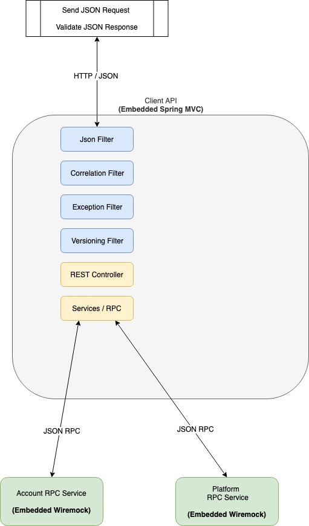

Client API Overview
- 50+ API endpoints
- Four Versions - Latest 2019-05-21 includes LockFx
- Client on-boarded with one version - never forced to upgrade
- Apply non breaking changes to 'latest' (all) versions
- Add new version (with migrations) to allow backwards incompatible changes
- All clients on 'old' versions - bau
- Should webapp be a 'versioned' client-api user??
Adding 2019-05-21 LockFx Version

- No Integration Tests
- 50+ endpoints x 4+ Versions = ??? contracts
- Regression will be inevitable
- No confidence -> Add Contract tests
- Considered PACT
Client API Single Request

- Can unit test each component, but...
- Contract is result of running through all
- REST Controller is 'latest' version
- Versioning filter applies delta
- Versioning filter uses JSON object API
- Versioning filter -> :thumbsup
Client API Contract Testing

- Start production like embedded client-api
- Start embedded wiremock dependent services
- Send real json request / Assert real json response
- Wiremock provides outbound req/resp verification & assertion
- Run as part of gradle default unit 'test' task
- about 10 'latest' contract tests
- about 10 previous version 2019-04-01 contract tests
- about 20 seconds to run
Contract Test Structure
- Kotlin Tests - client-api/src/test/kotlin
-
`com.airwallex.client.api.e2e.versioning.latest` -
`com.airwallex.client.api.e2e.versioning.v2019_04_01` - JSON contract files - client-api/src/test/resources
-
`com.airwallex.client.api.e2e.versioning.latest` -
`com.airwallex.client.api.e2e.versioning.v2019_04_01` - Test Base Constructor - Configure runtime account service
-
class E2EConversionTest : BaseE2EApiTest(LATEST_VERSION) { -
class E2EQuoteTest : BaseE2EApiTest(v2019_04_01) {
Code Demo
Moving Forward
- Maintaining Contract Tests & JSON files
- Long Lived 'old' version JSON files -> ok as shouldn't change
- Long-lived embedded servers between test classes (suite?)
- Vertx & Dropwizard support embedded servers for testing
- REST, Kafka, Rabbitmq messages are all 'API's'
- Deprecating web-app-api ??